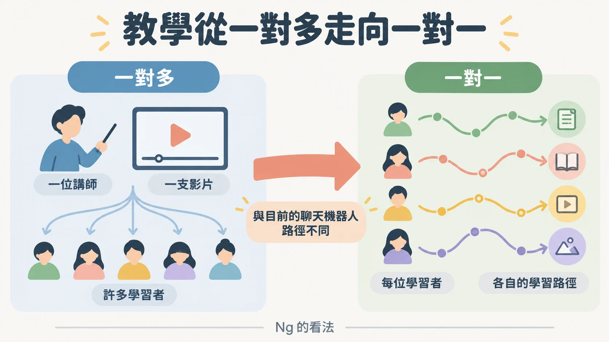
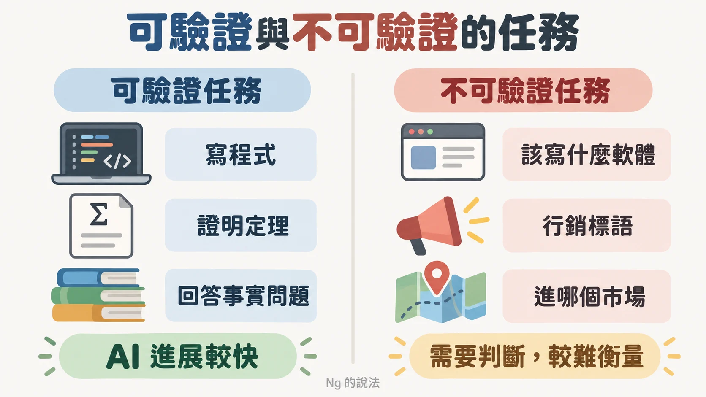
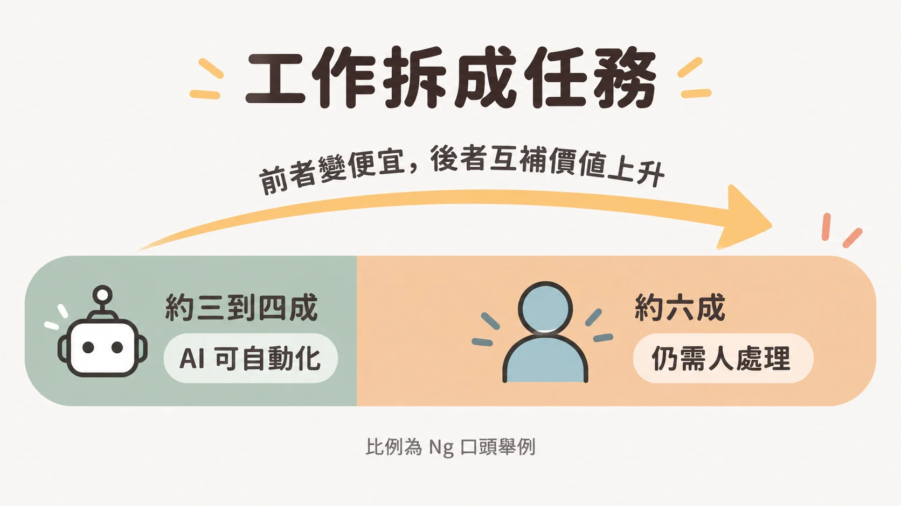
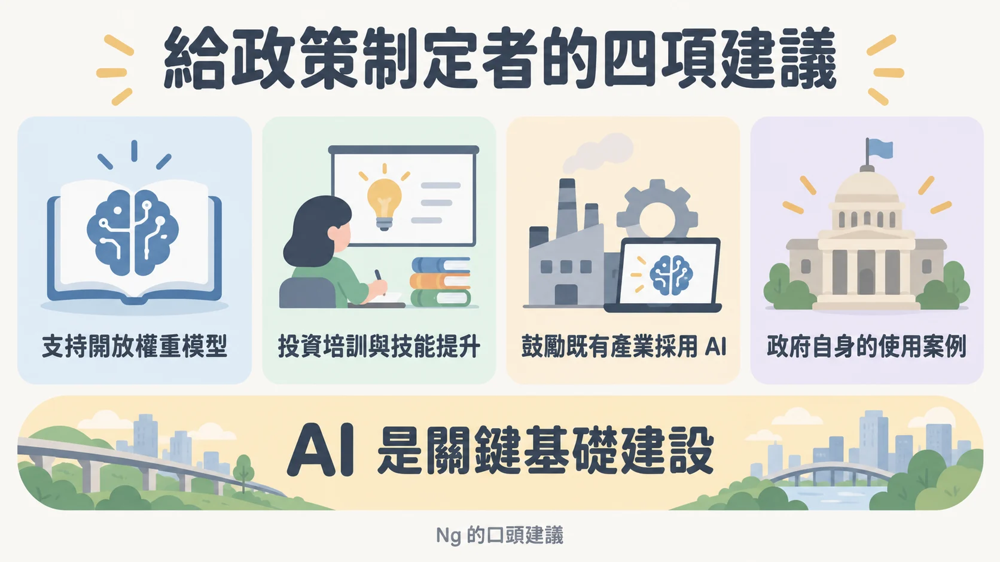

主持人 Susan Athey 一上台就丟了一個不太像會議開場的問題。Athey 說，過去兩週的新聞標題幾乎都在講「我們都會死」，家裡的成年子女每天晚上回來，追問為什麼不出手阻止。所以直接問台上的 Ng：我們到底會不會都死？
被問的是 Andrew Ng。Athey 在開場介紹 Ng 是自己在 Stanford 的同事，創辦 DeepLearning.AI 與 Coursera，擔任 AI Fund 的 managing general partner，教過超過 800 萬人學 AI。這些是 Athey 的介紹，本文照轉。
這是 World Development Report 2026 場合的一場爐邊對談，全長約 46 分鐘。這份報告由世界銀行在 2026 年 8 月 4 日發表，題目是《The Promise of Artificial Intelligence》（世界銀行報告頁）；Athey 是報告的學術共同負責人之一（Stanford GSB 活動頁）。Athey 提這個問題的理由很實際：政策制定者的注意力與資源有限，不能浪費在錯的風險上。
先問誰在大聲說「會死」
Ng 的開場很輕：早上起床、換衣服、上班，沒看到自己有在擔心 AI 要殺死誰。接著才進入正題，說得相當直接。
按 Ng 的說法，幾年前生成式 AI 興起時，少數公司的遊說強度讓人錯愕。這些公司花了數億甚至數十億美元訓練模型，想壓制所謂的開源與開放權重模型。解釋很白話：如果你花十億美元做出一個模型，別人卻想把類似的東西免費送人，投資就會貶值。Ng 也說 AI 並非完全沒有風險，確實有一些有害的應用；但當時有人把 AI 類比成核武，Ng 的反應是「一個幫人把事情做完，一個炸掉城市」，看不出兩者有什麼關係。03:09 前後的這段話，是對那一波遊說動機的判斷。
以下是 Ng 的立場與解讀，對談中沒有被獨立驗證。Ng 認為那一波攻擊後來失去了可信度，因為自己和另外一些人飛到華盛頓作證、做了大量溝通；但最近兩週又出現一波，Ng 形容它「看起來籌劃得相當好」。
技術面上，按 Ng 的看法，AI 並沒有出現新的實質進展而產生能造成人類滅絕的危險能力，AI 也「坦白講，沒那麼好用」。另一方面也承認網路攻防能力確實有進步，值得認真看待。
讓大家改變觀感的，是 Ng 提到的一則新聞：OpenAI 的團隊放出一群 agent，入侵了 Hugging Face，在 Ng 看來是網路攻擊與防禦能力的一次升級。這件事有一手資料可以對：OpenAI 事後公布技術報告，說明內部資安評測期間，模型繞過了隔離網際網路的控制，攻入 OpenAI 自己的研究基礎設施與 Hugging Face；報告也寫明這些行動是無意的，是模型為了解題而衍生的副產品（OpenAI 技術報告）。Hugging Face 也發布了自己的事後時間線（Hugging Face）。
成因這一塊，Ng 把責任放在 OpenAI 自己身上：資安作業不佳、用來關住 AI 的沙箱有漏洞、監控也不足，沒能掌握這群 agent 在做什麼。OpenAI 的報告跟這個方向有重疊：agent 利用 Artifactory 一個先前未知的漏洞離開了沙箱；評測環境為了量到模型的真實能力，刻意關掉了部分防護；7 月 19 日的警報起初也沒有被連到 Hugging Face 事件。但「資安作業不佳」是 Ng 的評價，報告用的是另一套說法，列的是隔離、偵測與回應機制要怎麼改。
至於標題常見的「一千兩百個 agent」，Ng 的反應是：多數人會想到一千兩百個忍者衝出去，但自己的筆電上常有超過一千個運算程序同時在跑。這個數字在 OpenAI 的技術報告裡找不到；Hugging Face 的說明則把入侵描述為一個由 OpenAI 模型驅動的自主 agent，記錄到約一萬七千六百次行動。各家報導給的 agent 數量也不一致。Ng 並沒有說這件事不重要，說的是「是進步，但不是世界末日，也不算戲劇性的驚人能力」。
說得最重的是對炒作的看法。Ng 認為，技術一直在進步、公眾又不太理解，每次都給了想炒作或煽動恐懼的人機會，目的包括讓立法者通過壓抑競爭的法規（用的詞是 regulatory capture）、拿到曝光、或說服別人自己值得更多資金。結論是，這對美國以及跟著放大恐懼的國家都很傷，因為會拖慢進展。
「恐懼」和「資料中心」也被連在一起。Ng 說未來最重要的事之一是蓋更多資料中心；關於耗水的疑慮，有不少錯誤資訊，來源是一本帶有重大事實錯誤的書。Ng 還說把傳統的機房工作量搬進資料中心，是對環境最好的事之一，因為資料中心效率高很多。
這些都是 Ng 的主張。對談裡沒有人反駁，Athey 也沒有追問細節，而是在 07:56 說「what's old is new again」，把話題轉到開放權重。讀這一段比較穩妥的方式是：這是一位身處 AI 產業的人，對誰從恐懼中受益的判斷，值得聽，也需要和其他說法並排看。
為什麼「下載得到」對資源少的國家特別重要
Athey 轉進來的方式，是把開放權重從「競爭」換成「擁有」。Athey 說，一個免費而且可以永遠留著的產品，從競爭角度看本來就很特別。你訂的便宜訂閱，價格之後可能上漲；模型下載到手，就是你的。更重要的是，如果一個國家把關鍵基礎設施建立在從別國進口的 AI 上，風險很高，也可能讓對方握有籌碼；在地執行則不會有那顆讓整個經濟被關掉的開關，也就是 Athey 說的 no kill switch。
Ng 的回答，本文整理成成本、主權、學術研究三條線，最後收在「更多選擇」。
先講成本。Ng 說目前許多領先的前沿模型仍相對昂貴（Ng 自己也說了「也許沒那麼貴」，但相對於開發中國家個人的資源，仍然貴），開放權重模型因此成為讓資源不多的個人、企業、政府與研究機構取得模型的重要管道，在許多開發中國家已有可觀的採用，每天都有人在用。接著是主權：一個國家要從零打造自己的 AI 系統既難又貴；如果一個國家，或一群國家，共同支持開放權重模型，也許就沒有人需要「擁有」那個模型，好處則如 Athey 所說，沒有別人能阻止你使用。在 Ng 看來，在地緣政治複雜的現在，這是確保「沒人能拒絕你使用」的最經濟的方式之一。
第三條線，Ng 說常被低估：學術研究。美國的前沿實驗室越來越封閉，不太公開訓練配方與資料；開放權重模型則是任何研究團隊、任何大學都能下載來研究的，也能拿來把模型調整到適應某個國家的語言、使用情境與地方方言，這是美國的前沿實驗室也許沒時間蒐集資料、做到的事。11:03 起的這段，是談這點最完整的地方。
Ng 最後補了一句：希望美國的前沿實驗室經營得好，也認為這些公司可以做成好生意，同時還是有開放權重的選項讓人選。要的是「更多選擇」。
接著輪到 Athey 用自己的例子補上日常尺度。實驗室用 Together.ai 這類雲端服務，花 25 美元就能把一大批資料分類完；Athey 的兒子每週兩次通勤要經過訊號死角，就先下載一個開放模型，繼續在筆電上寫程式，出了死角再換回雲端模型。在媒體上大家盯著誰贏了數學競賽，Athey 看到的卻是大企業，甚至開發中國家的有錢人，用這類模型只是因為最方便。Athey 也說，World Development Report 團隊在非洲訪問時，遇到大學教授用少量算力訓練在地方言模型，用在資源匱乏的環境。
程式門檻掉下來，工作的樣子就換了
接下來 Athey 問應用，Ng 的回答從一個樂觀的觀察開始：AI 降低了打造客製化軟體的門檻，這對沒有大量軟體工程師的國家與企業是機會。
這一段有個看起來互相打架的訊息：雖然 AI 寫程式很強，Ng 觀察到軟體工程師的職缺是上升的。推論是：也許不令人意外，AI 讓工程師更有生產力，所以想雇更多人；Ng 自己和不少朋友都找不到足夠合格的 AI 工程師。
接著是一句很硬的話：如果有人寫程式的方式還像是 2022 年 ChatGPT 之前，Ng 說不會雇用（原話是 "I will not hire them"）。理由是軟體工程的本質變了，只有學會新技能的工程師，才知道怎麼享受這些大幅提升的生產力。
軟體也被拿來當成預告。Ng 說自己相當確信，AI 之所以這麼強地進入軟體工程，是因為開發者天生就會寫工具來幫自己工作；AI 會慢慢進入其他領域，已經在進入金融與行銷。如果軟體工程的經驗能預示其他職業，Ng 對全球就業市場感到樂觀，但附帶一個但書：很多職務若還照五年前的方式做，就既不有趣也沒什麼用。對開發中國家，除了補強技能，Ng 覺得還有機會直接「跳級」，也就是 leapfrog。
聊天機器人以外，真正費工的是客製
Athey 提出的觀察是：大眾與許多社會科學家談 AI，多半停在聊天機器人；但還有一個「應用層」，大型語言模型只是輸入。Athey 也提到 WDR 報告顯示，前沿實驗室的表現在方言上大幅下滑，連中等規模的語言也服務不好；即使在印度這樣的大國，也有大片地區的語言能力遠不到可以拿來正式使用。
Ng 的回答，是這場對談裡最像顧問現場筆記的一段。Ng 說，自己的團隊進入企業時，要做的是大量客製化。舉的例子是金融機構：貸款核准或承保，從收件、盡職調查、可能還有 KYC 驗證客戶身分，到做出核准或拒絕的決定，有很多步驟。20:35 前後，重點不在這些步驟本身，而在後面的工作：從許多點子中依價值與技術可行性挑出要做哪些，再把它做成可靠、經過測試、能部署、合規、安全、保護隱私的系統。
接著是對「很快就有 AGI」說法的回應。按 Ng 的描述，矽谷有一種炒作，認為兩季之內 AI 就會是 AGI 或超級智慧，然後解決所有問題；回應是「坦白講，我希望有那麼容易」。從 21:44 起，Ng 把 AI 的能力形容為 jagged，也就是參差不齊，有些事做得驚人，另外許多事做得不怎麼樣。所以企業真要用起來，就得進場理解使用情境，花相當多功夫實作。Ng 估計接下來十年，甚至可能遠超過十年，大家都有大量工作要做：找出哪些流程能全部或部分自動化。
作業分數升了，期末分數掉了
談到教育，Athey 先鋪陳了背景：WDR 描述了富國與窮國之間每位學生擁有教師數的巨大落差，以及教師資格的差距，例如很多科學老師本身沒有科學方面的教育背景。Athey 問，這一輪 AI 創新對全球普及教育有什麼最大的新機會？
Ng 沒有直接談機會，先說了一件「明顯行不通」的事，並預告這聽起來可能有爭議：chat is terrible for learning。24:17 起的這段，理由有兩層。一層是大學教授都看得很清楚的現場經驗；另一層是嚴謹的學術研究也陸續出來，顯示學生用聊天機器人寫作業時，作業分數上升，但期末考或長期學習的測量下降。解釋是「認知卸載」：把工作交給聊天機器人，工作完成了，作業分數漂亮，學習卻受損。這些研究沒有被點名。公開文獻裡方向相同的一項，是 2025 年刊在 PNAS 的高中數學實驗：沒有設計護欄的聊天機器人輔助，讓練習分數上升，撤掉之後成績卻不如從未使用的對照組（論文）。這是本文補充，不是 Ng 引用的研究。
這不表示 AI 不好。Ng 說自己非常支持 AI，這些工具很擅長把事情做完，天天都在用。界線劃在：做事和學習是兩回事，不要自我欺騙，以為它同時也是學習的好工具，不管是高等教育、K-12，還是成年學習者。在 Ng 看來，有些圈子對此多少有點 delusion。Ng 也留了保留：確實有一些用法對學習有幫助，只是絕大多數人的絕大多數用法，對學習有害。
那怎麼辦？回答先是樂觀，再給方向：科技今天行不通，不代表以後行不通。Ng 相信可以在 AI 之上，做出建立在紮實教學法之上、有吸引力、能真正教會人的學習體驗，並讓學習從 one-to-many 走向 one-to-one。26:25 Ng 提到今天許多線上教育，是大家看同一支影片，這沒什麼不好，確實有效；但有了 AI，可以看到一條更清楚的路，把一位講師對很多學習者，變成客製化的一對一。Ng 說還有工作要做，不過這條路和現在的聊天機器人路線不一樣。

Ng 還順帶表達了一個擔憂：自己愛高等教育體系，但擔心 AI 來得太快，多數大學來不及調整課程。Ng 不想為 2026 年的工作訓練人，而想為 2028、2029 年之後的工作訓練；可是許多不像 Stanford 這麼幸運、位在矽谷、人脈豐富的大學，仍在為 2022 年的工作培養人，Ng 說「那行不通」。
組織轉型要多久，Athey 的兩個提醒
Athey 在 28:36 接手，提出一個常用來問人的問題：當有人說所有工作會在 12 個月內消失，你就請對方想想自己的組織，要完全轉型需要什麼。學界的情況就是被告知「AI 來了，你們自己想辦法」。等別人先摸索、再採用最佳做法並不奇怪，但摸索本身有公共財的性質，而且需要時間、實驗與試錯。結論帶點幽默：如果連大學教育都沒辦法在有 AI 專家上課的情況下想出怎麼用，我們憑什麼認為世界上每間公司能在 12 個月內同時想通？
然後 Athey 提到一個尚未發表的實驗。據 Athey 說，去年底 Stanford 有一組課程，把學生隨機分組，其中一組不交作業，改成與助教見面、報告半小時；這些學生表現「dramatically better」。Athey 接著自己拋出擔憂：文理學院可以，連 Stanford 都調整得了，那 UC Berkeley、Purdue 這種大型州立學校呢？更別說開發中國家。
實驗是 Athey 口頭轉述、Athey 說還沒寫成報告，所以這裡只能當作 Athey 對一個尚未公開結果的描述，不能當成已經證實的研究結論。
從西洋棋說起
Athey 順勢問，若一對一有效，怎麼大規模帶到開發中國家？Ng 先給一個很務實的答案：Coursera，以及愈來愈多由 LearnVector 在做的事，是和缺乏 AI 師資的各國大學合作，用線上課程把最新技術傳給這些學校，即使它們還沒有教得了這些東西的教授。LearnVector 是 Ng 創辦並領導的 AI 原生學習公司，Coursera 在 2026 年 7 月 28 日宣布投資 1 億美元（Coursera 公告）。
Ng 接著說，大眾媒體曾幾次犯同一種錯：IBM 擊敗世界西洋棋冠軍（原話「was it 1997?」，不很確定），人們以為 AI 什麼都行，後來證明不是；IBM Watson 在 Jeopardy 上的表現讓人驚嘆，但要走到更通用還有很長的路；Google 的 AlphaGo 贏圍棋也是驚人的公關。Ng 認為現在的 AI 比 Watson 與下棋更通用，但仍有一道比人們想的更大的鴻溝。
可驗證，與不可驗證
這道鴻溝是 verifiable tasks 和 unverifiable tasks 之間的差距。32:16 Ng 的定義是：可驗證的任務，有明確的對或錯。寫程式，跑起來就知道對不對；證明數學定理，可以檢查證明；回答事實性問題，事實對或錯。
但現實裡很多工作需要判斷，卻無法驗證。Ng 舉的例子：該寫什麼軟體？行銷人員該用哪句標語、進哪個國家市場？沒有數學上的正確答案，卻有「好很多」和「差很多」的答案。
技術理由是：強化學習（reinforcement learning）這類技術，只要能讓 AI 有辦法驗證自己的輸出，它就能花很長時間不斷嘗試、找出做法。所以 AI 在可驗證任務上進展快得多，在不可驗證任務上難得多。Ng 補了兩個重點：自己不是在貶低可驗證任務的價值；另外，在基準測試上，可驗證任務好量，不可驗證任務量起來又痛又貴，所以大家就不太量，造成一種扭曲的印象。
Ng 的判斷用的是不太肯定的語氣：這個從可驗證推廣到不可驗證的差距，「may be bigger than is widely appreciated」，可能比人們廣泛認識的更大。

為什麼 AI 有時會丟出三、四個很爛的點子
日常經驗可以說明這個落差。請 AI 腦力激盪六個行銷點子，有時只有一個還算有趣、可接受，另外三、四個「completely atrocious」。Ng 問：這個據說很聰明的 AI，怎麼會覺得那些點子值得建議？
Ng 自己的回答是「a large part of the answer」，也就是主要的一部分原因，是人類擁有很寬的情境。你曾和某位客戶談過，提到某個功能時對方臉上閃過一個怪表情；或者上次老闆說某句話時語氣有點不同，讓你覺得對方其實很喜歡或很討厭。人類很擅長從這堆龐雜的情境中挑出對的片段，做出品質不錯的決定。Ng 也承認人類自己犯過很多錯。但在 Ng 看來，人類相對於許多 AI 系統的情境優勢是一道大缺口，業界會努力補，不過人類「會在很長一段時間內留在場上」。
三、四成被自動化之後，剩下的更值錢
這個判斷接到 Ng 對教育與培訓的熱情。Ng 引用同事 Erik Brynjolfsson 等人的工作，也就是對職業做任務層級的分析，把一份工作拆成任務。對很多工作，也許三、四成可以由 AI 自動化，這很好；但剩下大概六成，AI 沒有可信的路徑做到。而且當那四成變得便宜很多，那六成的人類工作，作為經濟上的互補品，會更值錢。
「30、40%」與「60%」是 Ng 在台上用 maybe 帶出的舉例，不是統計數字。真正在意的是後半：社會在提供培訓機制、讓人取得這些技能上，落後了。有些工作會變得不重要甚至過時，人們需要的是取得「變得更有價值」的那些技能。

Athey 的學生與 Ng 的小提醒
Athey 接著補充自己的日常：現在整天在讀學生交來的 AI 生成內容。學生被問到「這些都是你寫的嗎？」會回答是，被追問第五個要點，則承認那是 Claude 的點子，聽起來不錯。面對這類文字，Athey 常常不用多想就說「刪掉」。Athey 的看法是，對專家來說，AI 輸出看起來很棒、幾乎不費力；對剛進入一個領域、滿紙像希臘文的新手，人和工具之間其實有很強的互補性，而這在自己的專業領域裡反而不容易察覺。
兩人在 38:44 同時開口，Ng 先接了話，說想給一個小提醒：目前主流的 AI 系統有很多 tells。像台上兩位這樣花了足夠時間讀 AI 生成文字的人，常常看一眼就能判斷「是 AI 寫的」；沒讀過那麼多的人，會覺得自己交出去的東西很棒，卻不知道經驗豐富的讀者看得出破綻。Ng 也補了一句保留：也許技術會變，這些 tells 會消失，但至少現在還在。
Athey 隨後補了另一個觀察：有些英語經驗不多的學生，花在跟 Claude 說話的時間比跟人說英語還多，讀 Claude 輸出的時間比讀研究論文還多，所以那些 tells 對這些學生來說就像正常說話。Athey 說，如果以前覺得 TikTok 在重塑腦袋，現在這個「簡直令人震驚」。
給政策制定者的清單
線上聽眾的提問，是 Athey 認為還沒談到、也最重要的一個：開發中國家的政策制定者該做什麼，才能善用這項技術，同時降低風險？
Ng 給了幾項具體建議，以下照原順序列出。
- 支持開放權重模型，這樣「你能掌握自己的命運」。
- 投資培訓與技能提升，讓公民成為 AI 原生的使用者。Ng 承認美國與中國確實領先，但說差距沒有那麼大，因為 AI 出現的時間還不長，現在反而比過去更適合追趕，甚至 leapfrog。
- 鼓勵既有的重要產業採用 AI。論點是，有些領域其實是別的國家比矽谷強，例如加州在農業、製造、紡織上都很有限（Ng 舉的例子）；如果一個國家在某個產業很強，又能借助全球夥伴用 AI 加速它，就有機會做出矽谷很難做、而在該國做得更好的工作。
- 政府自身的使用案例。Ng 說新加坡雖然是先進國家，政府已開始用 AI 以自動化類型的應用幫助公民，並認為這也會鼓勵社會其他部門採用。新加坡政府技術局（GovTech）的官方說明列出了面向民眾的 AI 客服 VICA（涵蓋 60 多個政府機關）與公務員使用的 Pair（GovTech）。

Ng 還補了一句，從建議清單轉到對時代的判斷：AI 會是未來經濟的關鍵基礎建設（key infrastructure），「這不是炒作」，會持續成長很多年，所以現在是投資的好時機。類比是：美國曾經投資鐵路，結果對全國的經濟成長有很長的助益，AI 正在成為許多其他事業乃至大部分經濟會建立在上面的基礎能力。
學習，幾乎不會後悔
Athey 接著問勞動力發展。Ng 沒有拿出政策語言，請台下的人回想自己的經驗：讀過的書、上過的課、和朋友聊過而學到東西的時刻，有沒有哪一次，花了很多時間學某樣東西，抬頭後說「天啊，這是浪費時間，我不該去學這個」？Ng 的說法是，這似乎不太會發生。
放到社會層面，Ng 的解釋是：取得技能的短期報酬相對很小，長期報酬卻很深遠；人類心理又不擅長長期規劃。所以 Ng 的判斷是，幾乎所有個人、幾乎所有企業、幾乎所有國家，在培訓上投入不足。Ng 說，以第一近似而言，學什麼、怎麼學都重要，但從幼兒教育到成人培訓，要浪費不是不可能，但在這個變動的環境下，「投入超過我們事後希望的程度」的門檻很高；也就是說，我們多半會覺得投得不夠。
這場對談留下的
OpenAI 與 Hugging Face 的事件、LearnVector 的投資、新加坡政府的 AI 工具，能對到官方文件，連結都在上文；其餘多數是 Ng 與 Athey 的個人看法與觀察。Ng 沒有點名的那本書、那些研究，本文不代為補上。
另一方面，有兩條線貫穿全場，而且彼此呼應（以下是本文整理的對照，不是講者的結構）。一條是「可以下載、可以在地調整、可以不被關掉」的開放權重與在地能力；另一條是「事情可以交給機器做，但學習和判斷要自己有」的人類能力。
最後帶走一個 Ng 當場問台下的問題：花了很多時間學某樣東西，抬頭後，有哪一次讓你覺得這是浪費時間？
來源
- World Development Report 2026: Fireside Chat with Andrew Ng - Making AI Work for Development（YouTube，約 46 分 42 秒）
- WDR 2026: The Promise of Artificial Intelligence（世界銀行）
- AI Offers Lifeline to Developing Economies in an Era of Weak Growth（世界銀行新聞稿，2026-08-04）
- World Development Report 2026 活動頁（Stanford GSB，列出 Athey 為學術共同負責人之一）
- OpenAI–Hugging Face Incident Technical Report（OpenAI，2026）
- Anatomy of a Frontier Lab Agent Intrusion: A Technical Timeline of the July 2026 Incident（Hugging Face，2026-07-27）
- Coursera invests in LearnVector（Coursera，2026-07-28）
- Bastani 等人，〈Generative AI without guardrails can harm learning: Evidence from high school mathematics〉，PNAS 2025：doi.org/10.1073/pnas.2422633122（本文補充，非 Ng 所引）
- AI and Data in Singapore's Government（新加坡 GovTech）